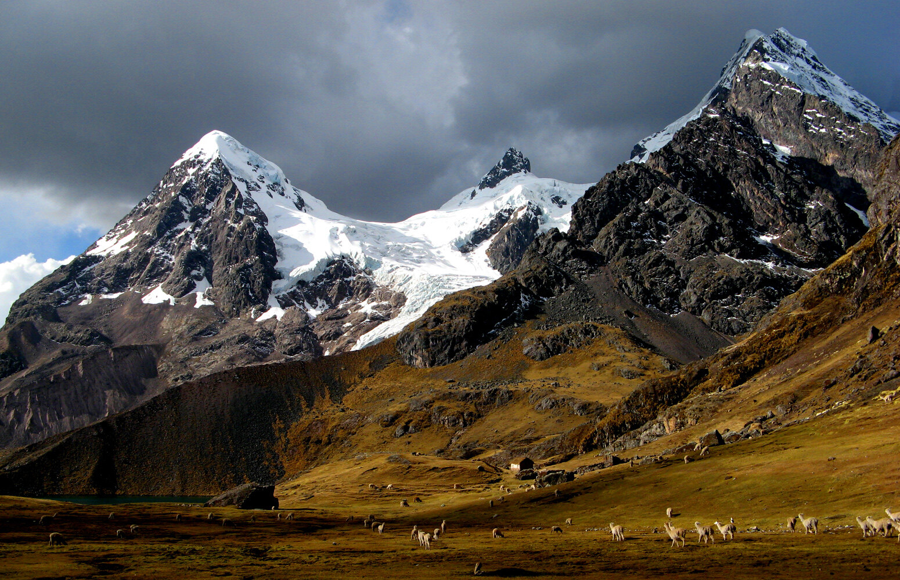
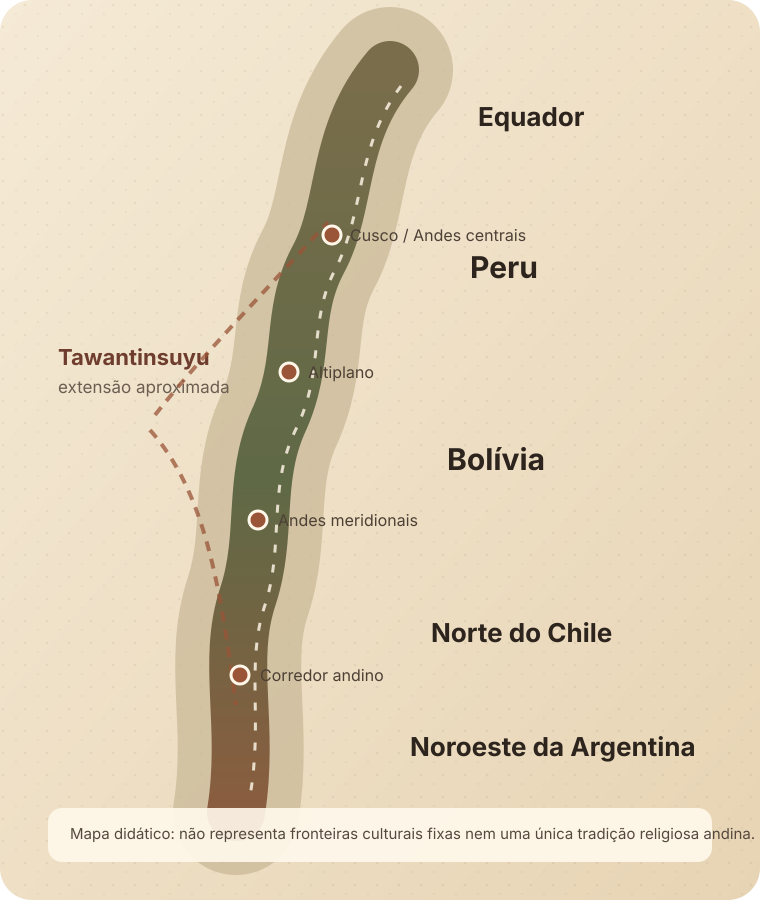
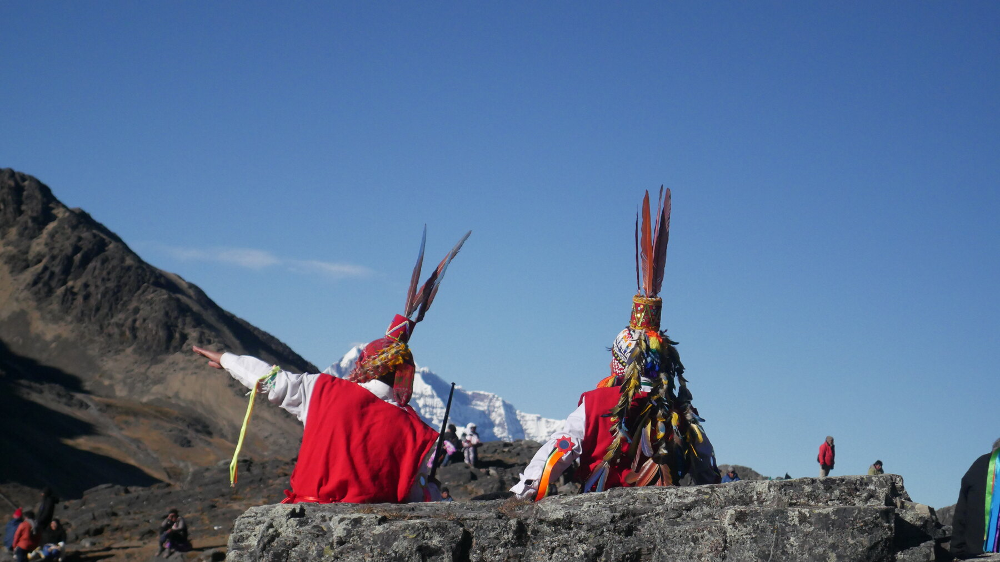

Religião • História • Antropologia • Andes
Espiritualidade Andina
Cosmovisão, ancestralidade, território e continuidade cultural nos Andes.
A expressão “Espiritualidade Andina” reúne tradições religiosas e cosmológicas desenvolvidas por diferentes sociedades dos Andes. Não constitui uma religião única e não se limita ao Império Inca: envolve formas diversas de relacionar comunidade, ancestrais, território, paisagem e mundo sagrado.12
Não existe uma única “religião andina”
Povos quéchuas, aimarás e numerosas sociedades anteriores ao Tawantinsuyu desenvolveram histórias, instituições e práticas próprias. Mesmo conceitos hoje muito associados aos Andes podem mudar de sentido conforme língua, localidade, período histórico e comunidade.1
Ponto-chave: semelhanças regionais não autorizam transformar milhares de anos de diversidade andina em um único sistema religioso.
O essencial em quatro relações
Comunidade
Pessoa, família, parentesco e trabalho coletivo podem ser organizados por redes que ultrapassam o indivíduo isolado.
Ancestralidade
Mortos e antepassados aparecem em registros arqueológicos, históricos e etnográficos como participantes importantes da memória e da organização social.3
Território
Montanhas, fontes, cavernas, pedras, lagos e outros lugares podem possuir agência ou caráter sagrado em tradições específicas.
Reciprocidade
Trocas de trabalho, cuidado, oferenda e obrigação são uma chave importante para compreender muitas relações sociais e rituais andinas.
Antes, durante e depois dos Incas
O Tawantinsuyu foi uma etapa tardia de uma história religiosa muito mais longa. Redes políticas, centros cerimoniais e cosmologias já existiam nos Andes séculos ou milênios antes da expansão inca. O próprio sistema imperial aproveitou infraestruturas, lugares e cultos locais preexistentes.4
- Antes dos Incas
Chavín → Nazca → Moche → Tiwanaku → Wari → Chimú
Sociedades distintas criaram centros cerimoniais, iconografias, paisagens sagradas e práticas próprias. Não formavam uma religião única.
- Séculos XV–XVI
Tawantinsuyu
A expansão inca conectou territórios, cultos, huacas e peregrinações dentro de um projeto imperial. O Qhapaq Ñan alcançou sua maior extensão nesse período, embora incorporasse caminhos anteriores.4
- Século XVI
Conquista espanhola
Guerra, epidemias, reorganização política e evangelização modificaram radicalmente instituições e práticas religiosas.
- Séculos XVI–XVIII
Evangelização e repressão
Campanhas coloniais procuraram identificar e destruir práticas classificadas como “idolatrias”, ao mesmo tempo em que comunidades reelaboravam formas de continuidade.5
- Período colonial
Adaptação e cristianismos andinos
Imagens, festas, lugares sagrados e devoções cristãs foram apropriados e reinterpretados localmente, gerando formações religiosas que não podem ser reduzidas a simples substituição.6
- Séculos XX–XXI
Continuidade e revitalização
Práticas comunitárias, conhecimentos, música, peregrinações e expressões religiosas seguem vivos, inclusive em redes que atravessam fronteiras nacionais.7
Os Andes ultrapassam as fronteiras do Peru

Uma região, muitas trajetórias
Equador, Peru, Bolívia, norte do Chile e noroeste da Argentina integram diferentes histórias andinas. A UNESCO também reconhece projetos de salvaguarda compartilhados por comunidades aimarás na Bolívia, Chile e Peru.7
A categoria “Andes” é geográfica e histórica; não define, sozinha, uma identidade religiosa.
Palavras que exigem contexto
Traduzir conceitos andinos por uma única palavra em português costuma empobrecer seus significados. Os blocos abaixo são introduções, não definições universais.
Pachaespaço · tempo · mundo vivido
Em diferentes usos quéchuas, pacha articula dimensões espaciais e temporais. Estudos arqueológicos e linguísticos destacam que o termo pode reunir “lugar”, “mundo” e “momento”, variando de escala e contexto.8
Pachamamaterra · fertilidade · relações
É frequentemente traduzida como “Mãe Terra”, mas essa fórmula pode esconder diferenças regionais e históricas. Em práticas contemporâneas dos Andes, a relação com Pachamama pode envolver território, produção, fertilidade, oferenda e reciprocidade.
Wak'a / huacalugar · objeto · ancestral · presença sagrada
Fontes coloniais e estudos modernos usam huaca/wak'a para uma ampla gama de lugares, objetos, ancestrais ou presenças consideradas sagradas. A categoria não equivale simplesmente a “templo”.9
Apusmontanhas · território · agência
Em determinadas tradições quéchuas contemporâneas, montanhas são tratadas como seres ou autoridades da paisagem. O Ausangate, por exemplo, é descrito em documentação da UNESCO como um Apu poderoso na região de Cusco.10
Aylluparentesco · terra · cooperação
O termo pode designar grupos organizados por idiomas de parentesco, direitos sobre terra e recursos, subsistência e trabalho recíproco. A literatura acadêmica também registra debates sobre como definir o ayllu em diferentes períodos e regiões.3
Reciprocidadetrabalho · troca · obrigação
Reciprocidade é importante para compreender diversas formas de cooperação andina, mas não deve ser transformada em “lei espiritual universal”. Ela opera em sistemas sociais concretos, com assimetrias, deveres e contextos históricos específicos.
O indivíduo dentro de uma rede
Em muitos estudos andinos, pessoa e identidade aparecem inseparáveis de parentesco, trabalho, terra, memória e relações com não humanos. Isso torna inadequado traduzir essas tradições diretamente por categorias contemporâneas de “autoaperfeiçoamento”, “vibração” ou “elevação espiritual”.
Religião vivida em território, calendário e comunidade
Oferendas
Podem materializar relações de reciprocidade com lugares, seres, ancestrais ou forças reconhecidas em uma comunidade.
Festividades
Calendários religiosos e agrícolas articulam música, santos, montanhas, trabalho e identidade em configurações historicamente transformadas.
Peregrinação
Deslocamentos a santuários ou montanhas sagradas podem reunir formas católicas e andinas. Qoyllurit'i é um exemplo contemporâneo reconhecido pela UNESCO.11
Agricultura
Clima, relevo, água, cultivo e criação de animais participam de calendários e relações sociais que também podem adquirir dimensão ritual.
Música e dança
Não são ornamentos externos: em muitas festas, estruturam memória, pertença, devoção e circulação entre comunidades.
Ancestralidade
Registros arqueológicos e coloniais documentam diferentes formas de presença social dos mortos, sem que um único modelo explique todos os Andes.
Quando religião também é política
O Estado Inca integrou práticas religiosas à administração de um território amplo. Santuários, huacas, sacerdócios, calendários e peregrinações podiam participar tanto da vida religiosa quanto da legitimação do poder imperial.12
Dimensão religiosa
- templos e santuários;
- huacas e paisagens sagradas;
- sacerdotes e especialistas;
- cerimônias e oferendas;
- peregrinações.
Dimensão política
- legitimação imperial;
- integração territorial;
- administração de santuários;
- incorporação de cultos locais;
- hierarquização de calendários e rituais.
Importante: o Império Inca não “inventou” toda a religiosidade andina. Ele reorganizou e incorporou tradições anteriores e locais.
Aspectos difíceis da história
Capacocha
Fontes arqueológicas e históricas documentam cerimônias incas que incluíam sacrifícios humanos, particularmente de crianças, em determinados contextos estatais e locais de alta montanha.13
Limite: essa prática não deve ser generalizada para todos os povos, épocas ou religiões andinas.
Poder e religião
Religião também podia participar da legitimação de hierarquias políticas, obrigações de trabalho, tributo, expansão e controle territorial. Descrever o sagrado apenas como “harmonia com a natureza” apagaria conflitos e poder.
O que foi feito contra essas tradições?
A conquista e a evangelização introduziram novas instituições religiosas e políticas, mas também campanhas de repressão. Visitações e programas de “extirpação das idolatrias” investigavam práticas indígenas, destruíam objetos e lugares rituais e perseguiam especialistas religiosos.5
Sobreviver também significou transformar
Continuidade cultural não exige imobilidade. Ao longo do período colonial e depois dele, comunidades andinas reelaboraram imagens, festas, santos, peregrinações e paisagens dentro de novos mundos religiosos.6
O objetivo não é decidir se uma prática é “puramente indígena” ou “puramente católica”, mas compreender como pessoas reais combinaram, disputaram e ressignificaram elementos ao longo do tempo.
Espiritualidade andina continua sendo vivida
Tradições comunitárias vivas
Conhecimentos, festas, oralidade e relações territoriais continuam transmitidos por comunidades contemporâneas, não apenas preservados em museus.
Identidade indígena
Língua, território e religiosidade podem participar de projetos de reconhecimento e continuidade cultural.
Espiritualidade globalizada
Turismo, redes sociais e mercados espirituais também reinterpretam conceitos andinos — às vezes em diálogo com comunidades, às vezes removendo-os de seus contextos.

Quando tradição vira produto
“Xamanismo andino”, “ritual de Pachamama”, “iniciação inca” e outros rótulos podem designar experiências muito diferentes: práticas comunitárias reais, releituras contemporâneas, turismo cultural ou produtos sem vínculo demonstrável com comunidades de origem.
Antes de aceitar uma alegação de autenticidade, pergunte:
- Quem está ensinando a prática?
- A comunidade ou linhagem de origem é identificada?
- Existe participação ou benefício para essa comunidade?
- O significado original é contextualizado ou substituído por linguagem New Age?
- Há diferença clara entre tradição documentada e criação contemporânea?
- Alegações terapêuticas ou sobrenaturais são apresentadas como evidência científica sem base?
Simplificações que distorcem os Andes
| Afirmação | Avaliação | Contexto |
|---|---|---|
| “Os Incas criaram a espiritualidade andina.” | Incorreto | Religiosidades e centros sagrados existiam muito antes do Tawantinsuyu. |
| “Todas as culturas andinas tinham a mesma religião.” | Incorreto | A diversidade regional e histórica é extensa. |
| “Pachamama é simplesmente a deusa da Terra.” | Simplificação | O termo e suas relações religiosas variam conforme contexto e comunidade. |
| “Montanhas podem possuir significado sagrado.” | Documentado | Há documentação histórica e etnográfica de montanhas e Apus em tradições andinas específicas.10 |
| “O Estado Inca realizou capacocha.” | Documentado | Há evidência arqueológica e histórica para contextos específicos.13 |
| “Todos os povos andinos praticavam sacrifício humano.” | Generalização | Práticas variaram por sociedade, período e ritual. |
| “Práticas andinas continuam existindo.” | Documentado | UNESCO e etnografias contemporâneas registram continuidade em várias comunidades.7 |
| “Tudo que hoje se vende como xamanismo andino é tradicional.” | Não necessariamente | Mercados espirituais podem criar combinações contemporâneas sem continuidade demonstrada. |
Três portas para estudar os Andes
Felipe Guaman Poma de Ayala
El primer nueva corónica y buen gobiernoinício do século XVII · crônica ilustradaPor que ler: articula perspectivas indígenas, cristãs e coloniais sobre sociedade andina, conquista e governo.
Limitação: é uma intervenção política e religiosa situada, não fotografia neutra do mundo pré-hispânico.14
Manuscrito de Huarochirí
A Testament of Ancient and Colonial Andean Religionfim do século XVI / início do XVII · texto quéchua colonialPor que ler: preserva narrativas locais sobre huacas, território, conflitos e memória religiosa.
Limitação: foi produzido em contexto colonial e precisa ser interpretado dentro desse processo.9
Inca Garcilaso de la Vega
Comentarios Reales de los Incas1609 · memória e história intelectualPor que ler: tornou-se fonte central para compreender a construção letrada da memória inca.
Limitação: combina memória familiar, formação humanista e projeto autoral; deve ser confrontado com outras fontes.15
Por que estudar Espiritualidade Andina?
História
Compreender sociedades anteriores, contemporâneas e posteriores à conquista.
Antropologia
Observar maneiras distintas de estruturar pessoa, parentesco, paisagem e território.
Religião
Estudar continuidade, transformação e criação de cristianismos andinos.
Ecologia e território
Conhecer relações culturais com montanhas, água, agricultura e paisagem sem romantizá-las como ambientalismo moderno.
Colonialismo
Entender evangelização, extirpação de idolatrias e produção de arquivos coloniais.
Pensamento crítico
Distinguir prática comunitária, fonte histórica, interpretação acadêmica e mercado espiritual contemporâneo.
Como as afirmações são classificadas
Alta evidência
Múltiplas fontes independentes, arqueologia, documentação histórica ou instituições especializadas convergem.
Evidência moderada
Há documentação razoável, mas o significado ou alcance ainda admite interpretações diferentes.
Evidência limitada
Registros são escassos, indiretos, tardios ou muito dependentes de uma fonte.
Tradição / relato
Afirmação religiosa ou cultural descrita em seu próprio contexto, sem ser apresentada como comprovação científica independente.
Referências utilizadas
As fontes abaixo combinam patrimônio cultural, arqueologia, história, antropologia e documentos coloniais. Links institucionais e acadêmicos são priorizados quando disponíveis.
[1] UNESCO — comunidades aimarás
Safeguarding intangible cultural heritage of Aymara communities in Bolivia, Chile and Peru. Documenta patrimônio oral, música, conhecimentos tradicionais e continuidade cultural transnacional.
Abrir fonte[2] UNESCO — cosmovisão Kallawaya
Registros de patrimônio imaterial reconhecem uma cosmovisão andina específica dos Kallawaya, útil justamente para lembrar que “andino” não significa uniforme.
Abrir fonte[3] Cambridge — parentesco e ayllu nos Andes
Kinship in the Andes. Discute ayllu, parentesco, território, trabalho e também os desacordos acadêmicos sobre definições universais.
Abrir fonte[4] UNESCO — Qhapaq Ñan
Patrimônio Mundial que atravessa Argentina, Bolívia, Chile, Colômbia, Equador e Peru; a UNESCO descreve uma rede de mais de 30 mil km baseada também em infraestrutura pré-inca.
Abrir fonte[5] Cambridge — extirpação de idolatrias no Peru colonial
Estudos sobre o Peru colonial documentam campanhas e visitações religiosas que perseguiam práticas indígenas, inclusive destruição de ancestrais, objetos e santuários.
Abrir fonte[6] Cambridge — formação de cristianismos andinos
The naturalization of Andean Christianities. Analisa como imagens de Cristo, Virgem e santos participaram da formação de cristianismos locais nos Andes coloniais.
Abrir fonte[7] UNESCO — salvaguarda cultural aimará
O programa multinacional de comunidades aimarás registra a continuidade contemporânea de expressões orais, música e conhecimentos no eixo Bolívia–Chile–Peru.
Abrir fonte[8] Cambridge Archaeological Journal — pacha
Discussão arqueológica recente sintetiza pacha como conceito que articula tempo, terra e lugar, citando a tradição dos estudos do Manuscrito de Huarochirí.
Abrir fonte[9] Manuscrito de Huarochirí
Fonte quéchua colonial fundamental para estudos de huacas, cosmologias e religião local. A edição de Frank Salomon e George Urioste é referência acadêmica importante.
Abrir registro[10] UNESCO Courier — Ausangate, Apu e Pachamama
Reportagem de 2025 contextualiza tradições que tratam Ausangate como Apu e discute mudanças contemporâneas associadas ao recuo glacial.
Abrir fonte[11] UNESCO — peregrinação de Qoyllurit'i
Inscrita em 2011 na Lista Representativa do Patrimônio Cultural Imaterial. A UNESCO destaca a combinação de expressões de origens diversas, danças, peregrinação e identidade comunitária.
Abrir fonte[12] Cambridge — Estado e religião no Império Inca
Capítulo de história mundial dedicado às relações entre religião, Estado, peregrinação, sacrifício e administração no Tawantinsuyu.
Abrir fonte[13] British Museum — capacocha
O guia da exposição Peru: a journey in time apresenta evidências sobre rituais de capacocha no contexto inca, incluindo sacrifícios de crianças em cerimônias específicas.
Abrir PDF[14] Library of Congress — Guaman Poma
Registros bibliográficos e exposições da Library of Congress contextualizam Nueva corónica y buen gobierno, sua transmissão e importância para a história andina colonial.
Abrir fonte[15] Library of Congress — Inca Garcilaso
Registros bibliográficos sobre Comentarios Reales de los Incas e a tradição crítica em torno de Garcilaso de la Vega.
Abrir fonte[16] Wikimedia Commons — documentação visual
Fotografias de Ausangate e Qoyllurit'i usadas na página possuem licenças abertas e são creditadas individualmente no arquivo IMAGE-CREDITS.md.
Uma tradição não precisa permanecer imóvel para continuar existindo
Estudar Espiritualidade Andina é acompanhar uma história longa demais para caber na imagem de um “misticismo inca”. Ela começa antes do Tawantinsuyu, atravessa impérios, conquista, evangelização e repressão e continua em comunidades que negociam território, memória, trabalho, cristianismo e mundo sagrado no presente.
O ganho central é aprender a distinguir continuidade cultural de imobilidade — e documentação histórica de reconstrução espiritual contemporânea.